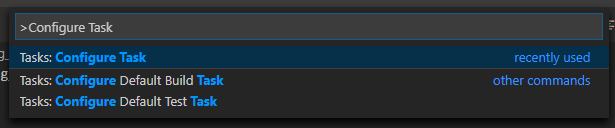
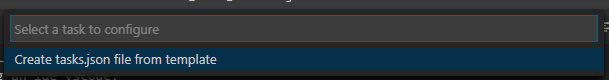
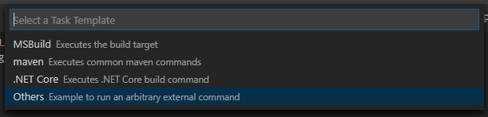
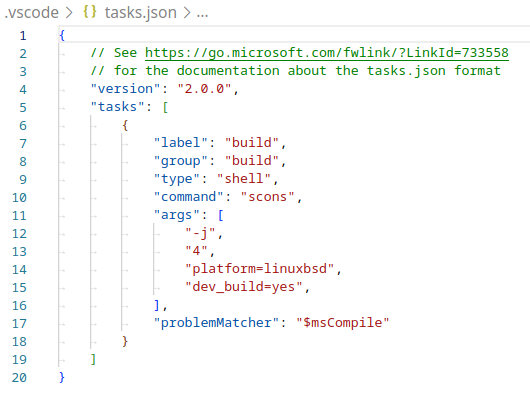

Visual Studio Code
Note
This documentation is for contributions to the game engine, and not using Visual Studio Code as a C# or GDScript editor. To code C# or GDScript in an external editor, see the C# guide to configure an external editor or the GDScript guide to using an external text editor.
Visual Studio Code is a free cross-platform code editor by Microsoft (not to be confused with Visual Studio).
Importing the project
Make sure the C/C++ extension is installed. You can find instructions in the official documentation. Alternatively, clangd can be used instead.
When using the clangd extension, run
scons compiledb=yes.From the Visual Studio Code's main screen open the Godot root folder with File > Open Folder....
Press Ctrl + Shift + P to open the command prompt window and enter Configure Task.

Select the Create tasks.json file from template option.

Then select Others.

If there is no such option as Create tasks.json file from template available, either delete the file if it already exists in your folder or create a
.vscode/tasks.jsonfile manually. See Tasks in Visual Studio Code for more details on tasks.Within the
tasks.jsonfile find the"tasks"array and add a new section to it:.vscode/tasks.json{ "label": "build", "group": "build", "type": "shell", "command": "scons", "args": [ // enable for debugging with breakpoints "dev_build=yes", ], "problemMatcher": "$msCompile" }

An example of a filled out tasks.json.
Arguments can be different based on your own setup and needs. See Introduction to the buildsystem for a full list of arguments.
Debugging the project
To run and debug the project you need to create a new configuration in the launch.json file.
Press Ctrl + Shift + D to open the Run panel.
If
launch.jsonfile is missing you will be prompted to create a new one.

Select C++ (GDB/LLDB). There may be another platform-specific option here. If selected, adjust the configuration example provided accordingly.
Within the
launch.jsonfile find the"configurations"array and add a new section to it:
{
"name": "Launch Project",
"type": "lldb",
"request": "launch",
// Change to godot.linuxbsd.editor.dev.x86_64.llvm for llvm-based builds.
"program": "${workspaceFolder}/bin/godot.linuxbsd.editor.dev.x86_64",
// Change the arguments below for the project you want to test with.
// To run the project instead of editing it, remove the "--editor" argument.
"args": [ "--editor", "--path", "path-to-your-godot-project-folder" ],
"stopAtEntry": false,
"cwd": "${workspaceFolder}",
"environment": [],
"externalConsole": false,
"preLaunchTask": "build"
}
{
"name": "Launch Project",
"type": "cppdbg",
"request": "launch",
// Change to godot.linuxbsd.editor.dev.x86_64.llvm for llvm-based builds.
"program": "${workspaceFolder}/bin/godot.linuxbsd.editor.dev.x86_64",
// Change the arguments below for the project you want to test with.
// To run the project instead of editing it, remove the "--editor" argument.
"args": [ "--editor", "--path", "path-to-your-godot-project-folder" ],
"stopAtEntry": false,
"cwd": "${workspaceFolder}",
"environment": [],
"externalConsole": false,
"setupCommands":
[
{
"description": "Enable pretty-printing for gdb",
"text": "-enable-pretty-printing",
"ignoreFailures": true
},
{
"description": "Load custom pretty-printers for Godot types.",
"text": "source ${workspaceRoot}/misc/utility/godot_gdb_pretty_print.py"
}
],
"preLaunchTask": "build"
}
{
"name": "Launch Project",
"type": "cppvsdbg",
"request": "launch",
"program": "${workspaceFolder}/bin/godot.windows.editor.dev.x86_64.exe",
// Change the arguments below for the project you want to test with.
// To run the project instead of editing it, remove the "--editor" argument.
"args": [ "--editor", "--path", "path-to-your-godot-project-folder" ],
"stopAtEntry": false,
"cwd": "${workspaceFolder}",
"environment": [],
"console": "internalConsole",
"visualizerFile": "${workspaceFolder}/platform/windows/godot.natvis",
"preLaunchTask": "build"
}
{
"name": "Launch Project",
"type": "lldb",
"request": "launch",
"program": "${workspaceFolder}/bin/godot.macos.editor.x86_64",
// Change the arguments below for the project you want to test with.
// To run the project instead of editing it, remove the "--editor" argument.
"args": ["--editor", "--path", "path-to-your-godot-project-folder"],
"cwd": "${workspaceFolder}",
"preLaunchTask": "build"
}
{
"name": "Launch Project",
"type": "lldb",
"request": "launch",
"program": "${workspaceFolder}/bin/godot.macos.editor.arm64",
// Change the arguments below for the project you want to test with.
// To run the project instead of editing it, remove the "--editor" argument.
"args": ["--editor", "--path", "path-to-your-godot-project-folder"],
"cwd": "${workspaceFolder}",
"preLaunchTask": "build"
}

An example of a filled out launch.json.
Note
Due to sporadic performance issues, it is recommended to use LLDB over GDB on Unix-based systems. Make sure that the CodeLLDB extension is installed for configurations using lldb.
If you encounter issues with lldb, you may consider using gdb (see the LinuxBSD_gdb configuration).
Do note that lldb may work better with LLVM-based builds. See Compiling for Linux, *BSD for further information.
The name under program depends on your build configuration,
e.g. godot.linuxbsd.editor.dev.x86_64 for 64-bit LinuxBSD platform with
target=editor and dev_build=yes.
Configuring IntelliSense
For the C/C++ extension:
To fix include errors you may be having, you need to configure some settings in the c_cpp_properties.json file.
First, make sure to build the project since some files need to be generated.
Edit the C/C++ Configuration file either with the UI or with text:

Add an include path for your platform, for example,
${workspaceFolder}/platform/windows.Add defines for the editor
TOOLS_ENABLED, debug buildsDEBUG_ENABLED, and testsTESTS_ENABLED.Make sure the compiler path is configured correctly to the compiler you are using. See Introduction to the buildsystem for further information on your platform.
The
c_cpp_properties.jsonfile should look similar to this for Windows:.vscode/c_cpp_properties.json{ "configurations": [ { "name": "Win32", "includePath": [ "${workspaceFolder}/**", "${workspaceFolder}/platform/windows" ], "defines": [ "_DEBUG", "UNICODE", "_UNICODE", "TOOLS_ENABLED", "DEBUG_ENABLED", "TESTS_ENABLED" ], "windowsSdkVersion": "10.0.22621.0", "compilerPath": "C:/Program Files/Microsoft Visual Studio/2022/Community/VC/Tools/MSVC/14.39.33519/bin/Hostx64/x64/cl.exe", "cStandard": "c17", "cppStandard": "c++17", "intelliSenseMode": "windows-msvc-x64" } ], "version": 4 }
Alternatively, you can use the scons argument
compiledb=yesand set the compile commands settingcompileCommandstocompile_commands.json, found in the advanced section of the C/C++ Configuration UI.This argument can be added to your build task in
tasks.jsonsince it will need to be run whenever files are added or moved.
Linting class reference XML files
To get linting on class reference XML files, install the vscode-xml extension.
Displaying documentation on hover
By installing the Godot Hover Docs extension, you can make class reference documentation appear when hovering symbols in C++ source or header files. The information is sourced from local XML files, so it works offline.
Note
This is only effective for symbols that are documented in the class reference XML, i.e. those that are exposed to the scripting API. Internal engine symbols will not show documentation on hover, unless they have a comment right above their declaration.
Troubleshooting
If you run into any issues, ask for help in one of Godot's community channels.